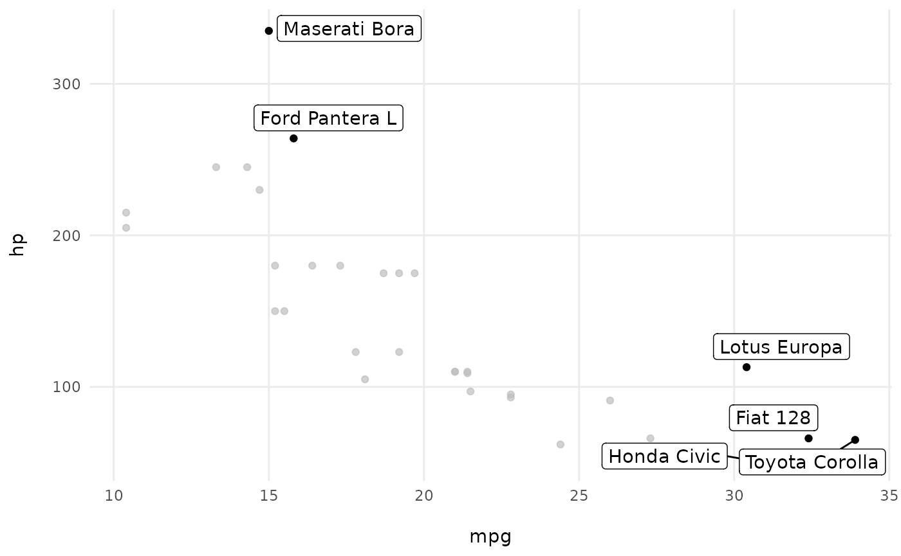

This vignette contains miscellanous instructions to stick to the OMNI guidelines.
Titles
A graph’s title should be a descriptive sentence that ends in a period. Subtitles or additional annotation are provided as needed.
Titles should be 12PT Calibri Bold and gray (HEX#666666) with appropriate emphasis colors when appropriate.
Decimal points
Decimal points are not included unless absolutely necessary. Most data can be rounded to whole numbers without losing important detail. Include one or two decimal places only if that level of precision is needed.
The scales package can be use to round data accordingly
:
scales::number(5.2578, accuracy = 1)
#> [1] "5"Same for percentages :
scales::percent(0.678, accuracy = 1)
#> [1] "68%"Adjust the accuracy parameter when needed :
scales::number(5.2578, accuracy = .01)
#> [1] "5.26"Data labels
Data labels required for interpretation are included. Extraneous ones are deleted. Focus attention by removing redundancy.
Data should be labeled directly, avoid legends. Position data labels near the data rather than in a separate legend (e.g., on top of or next to bars and next to lines).
Data labels should be at least 10 pt Calibri Light and gray (HEX #666666)
Option 1: with points or lines, please select the more important one
using the gghighlight package :
mtcars |>
rownames_to_column(var = "car") |>
ggplot(aes(x = mpg, y = hp)) +
geom_point() +
gghighlight::gghighlight(mpg > 30 | hp > 250, label_key = car) +
theme_omni() 
Option 2: With lines, you can compute a label to put at the end
iris |>
ggplot(aes(x = Sepal.Length, y = Sepal.Width, color = Species)) +
geom_point() +
geom_smooth(se = FALSE) +
geom_text(
data = iris |>
group_by(Species) |>
summarise(x = max(Sepal.Length),
y = max(Sepal.Width)) |>
ungroup(),
aes(x = x, y = y, label = Species),
nudge_x = .1,
nudge_y = .1
) +
scale_color_omni_discrete() +
theme_omni(show_legend = FALSE)
#> `geom_smooth()` using method = 'loess' and formula = 'y ~ x'Option 3: You can use the ggtext package to label in the
title :
library(ggtext)
iris |>
ggplot(aes(x = Sepal.Length, y = Sepal.Width, color = Species)) +
geom_point() +
labs(title = str_glue("All points for <span style = 'color:{omni_colors('Dark Blue')}'>setosa</span>,<span style = 'color:{omni_colors('Light Blue')}'>versicolor</span> and <span style = 'color:{omni_colors('Tan')}'>virginica</span>.")) +
scale_color_omni_discrete() +
theme_omni(show_legend = FALSE) +
theme(plot.title = element_markdown(colour = "darkgrey"))Data order
Data should be ordered intentionally. For some data, this means sorting so the values are arranged largest to smallest. Keep in mind, however, how ordering data can unintentionally diminish the responses of underepresented groups.
Avoid this :
mtcars |>
rownames_to_column(var = "car") |>
mutate(cyl = as.character(cyl)) |>
ggplot(aes(x = car, y = mpg, fill = cyl)) +
geom_bar(stat = "identity") +
coord_flip() +
scale_fill_omni_discrete() +
theme_omni()Use forcats::fct_reorder() to reorder data according to
a continuous variable :
mtcars |>
rownames_to_column(var = "car") |>
mutate(cyl = as.character(cyl),
car = fct_reorder(car, mpg)) |>
ggplot(aes(x = car, y = mpg, fill = cyl)) +
geom_bar(stat = "identity") +
coord_flip() +
scale_fill_omni_discrete() +
theme_omni()